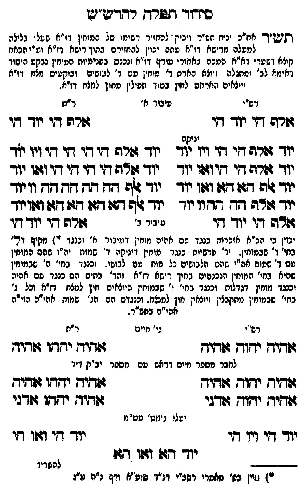

Neue Klartextfassung
[תש"ר אח"כ יניח תש"ר ויכוין להחזיר רשימו של המוחין דז"א שעלו בלילה למעלה מרישא דז"א עתה יכוין להחזירם בתוך רישא דז"א וע"י הכאת קוצא דשערי דא"א המכה באחורי עורף דז"א ונכנס בפנימיות המוחין נבקע היסוד דאימא לב' ומתגלה ויוצא הארת ד' מוחין עם ד' לבושים ובוקעים מצח דז"א ויוצאים הארתם לחוץ בסוד תפילין מחוץ למצח דז"א.] === טבלה === [רש"י — עיבור א'] אלף הי יוד הי [ר"ת] אלף הי יוד הי [יניקה — רש"י] יוד אלף הי הי ויו יוד יוד אלף הי הי ואו יוד יוד אלף הא הא ואו יוד יוד אלף הה הה וו יוד [יניקה — ר"ת] יוד אלף הי הי הי ויו יוד יוד אלף הי הי הי ואו יוד יוד אלף הה הה הה וו יוד יוד אלף הא הא הא ואו יוד [עיבור ב'] אלף הי יוד הי אלף הי יוד הי === סוף טבלה === [יכוין כי הכ"א אזכרות כנגד שם אהיה מוחין דעיבור א' וכנגד *) מקיף דל' בחי' ד' שבמוחין. וד' פרשיות כנגד מוחין דיניקה ד' שמות יה"ו שהם המוחין עם ד' שמות אה"י שהם הלבושים כל מוח עם לבושו. וכנגד בחי' ה' שבמוחין שהיא בחי' המוחין הנכנסים בתוך רישא דז"א והד' בתים הם כנגד שם אהיה וכנגד מוחין דגדלות וכנגד בחי' ו' שבמוחין היוצאים חוץ למצח דז"א וכל ג' בחי' שבמוחין מתקבלין ויוצאין חוץ למצח. וכנגדם הם הג' שמות אהי"ה הוי"ה אהי"ה כסד"ר.] === טבלה === [רש"י — גי' חיים] אהיה יהוה אהיה [ר"ת] אהיה יהוה אהיה === סוף טבלה === [לחבר מספר חיים דראש עם מספר יב"ק דיד] === טבלה === אהיה יהוה אהיה אהיה יהוה אהיה אהיה יהוה אדני אהיה יהוה אדני === סוף טבלה === [יעלו גימט' עס"מ] יוד הי ויו הי יוד הי ואו הי יוד הא ואו הא — הג"ה בתחתית העמוד — *) עיין בס' מאמרי רשב"י דנ"ד סוע"א ודף נ"ס [?] ע"ג
Original gegen neue OCR · Niqqud für Vergleich ausgeblendet
Original
[תש"ר אח"כK125-001 יניח תש"ר ויכוין להחזיר רשימוK125-002 של המוחיןK125-003 דז"א שעלוK125-004 בלילה למעלהK125-005 מרישא דז"א עתהK125-006 יכוין להחזירם בתוךK125-007 רישא דז"א וע"י הכאת קוצאK125-008 דשערי דא"א המכה באחוריK125-009 עורף דז"א ונכנס בפנימיות המוחיןK125-010 נבקע היסוד דאימא לב' ומתגלה ויוצא הארתK125-011 ד' מוחין עם ד' לבושיםK125-012 ובוקעים מצח דז"אK125-013 ויוצאים הארתםK125-014 לחוץ בסוד תפיליןK125-015 מחוץ למצח דז"א.] === טבלה === [רש"י —K125-016 עיבור א'] אלף היK125-017 יוד הי [ר"ת] אלף היK125-018 יוד הי [יניקה — רש"י]K125-019 יוד אלף הי היK125-020 ויו ∅K125-021 יוד יוד אלף הי הי ואוK125-022 יוד יוד אלף הא הא ואוK125-023 יוד יוד אלף הה הה ווK125-024 יוד [יניקה — ר"ת]K125-025 יוד אלף הי הי הי ויו יוד יוד אלף הי הי הי ואו יוד יוד אלף הה הה הה וו יוד יוד אלף הא הא הא ואו יוד [עיבור ב'] אלף הי יוד הי אלף הי יוד הי === סוף טבלה === [יכויןK125-026 כי הכ"א אזכרות כנגד שם אהיה מוחין דעיבור א' וכנגד *)K125-027 מקיף דל'K125-028 בחי' ד' שבמוחין. וד' פרשיותK125-029 כנגד מוחין דיניקה ד' שמותK125-030 יה"ו שהםK125-031 המוחין עםK125-032 ד' שמותK125-033 אה"י שהם הלבושים כל מוח עם לבושו.K125-034 וכנגד בחי' ה' שבמוחיןK125-035 שהיא בחי' המוחין הנכנסים בתוךK125-036 רישא דז"א והד' בתיםK125-037 הם כנגד שם אהיה וכנגד מוחין דגדלות וכנגד בחי' ו' שבמוחין היוצאים חוץ למצח דז"א וכל ג' בחי' שבמוחין מתקבליןK125-038 ויוצאין חוץ למצח. וכנגדם הם הג'K125-039 שמות אהי"ה הוי"ה אהי"ה כסד"ר.] === טבלה === [רש"י —K125-040 גי' חיים] אהיה יהוה אהיה [ר"ת] אהיה יהוה אהיה === סוף טבלה === [לחברK125-041 מספר חיים דראש עם מספרK125-042 יב"ק דיד] === טבלה === אהיה יהוה אהיה אהיה יהוה אהיה אהיה יהוה אדני אהיה יהוה אדני === סוף טבלה === [יעלוK125-043 גימט' עס"מ]K125-044 יוד היK125-045 ויו היK125-046 יוד הי ואו הי יוד הא ואו הא — הג"ה בתחתית העמוד — *) עיין בס' מאמרי רשב"יK125-047 דנ"ד סוע"אK125-048 ודף נ"ס ע"גK125-049
OCR · fehlbar
סידוד תפרד. רדדש"יש תיש"ך אח"רK125-001 יניח חגר ויבוין להחזיד רשימיK125-002 של המיזיןK125-003 דז"א ששליK125-004 בלילה למשלהK125-005 מרישא דז"א טחהK125-006 יכוין להחזירם בתיךK125-007 רישא דז"א וש"י הכאח קיצאK125-008 דשערי דא"א המכה באזור יK125-009 עורף דז"א ונכנס בפנימיוח החמזיחיןK125-010 נבקע היסוד דאימא לב' ומתגלה ויוצא הארחK125-011 ד' מוחין עם ד' נבישיםK125-012 ובוקעים זצח וז"אK125-013 ויוצאים הארחםK125-014 לחוץ בסוך חפיליןK125-015 מחוץ למצח דזחא . דש"יK125-016 עיבור א' ר"ח שרה דיK125-017 יוד די גזרה די יוך די ניגל שK125-018 יוד זזרה די די ויו יזדK125-019 יוד שרה דידי די דיK125-020 ויו יזד יוד זזרה די דיוזוו יוך יוך גזרה די דגי די די וזוK125-021 יוד יוד שה דזו דזו וזוK125-022 יוד יוד 46 דדן ז דזד דד וויוד יוד זדה דד דדוK125-023 יוד יוד ף דג: דו דזו דז ושויוד זדה דיK125-024 יוד חי ניביר ג' זורה דיK125-025 יוד דזי יכויןK125-026 כי הכ"א אזכרות כנגד שם אהיה מוחין דעיבור א' וכנגד "')K125-027 מקיף דר'K125-028 בחי' ד' שבמוחין. וד' שרשיוח .K125-029 כנגד מוחין דיניקה ד' שמוחK125-030 יה"ו שהסK125-031 המוחין טםK125-032 ד' שמוחK125-033 אה"י שהם הלבושים כל מוח עם לבושי.K125-034 וכנגד בחי' ה' שבמיחיןK125-035 שהיא בחי' המוחין הנכנסים בתיךK125-036 רישא דז"א והד' בחיםK125-037 הם כנגד שם אהיה וכנגד מוחין דגדלות וכנגד בחי' ו' שבמוחין היוצאים חוץ למצח דז"א וכל ג' בחי' שבמוחין מחקבציןK125-038 ויוצאין חוץ למצח. וכנגדם הם הגK125-039 שמות אהי"ה הוי"ה אהי"ה בסשץר. רש"יK125-040 גי' חיים ר"ח ששידך ידזוץ זיך גזדזידז ידדזו שחיק לחברK125-041 מספר חיים דראש עם מסחרK125-042 יב"ק דיד ג(דזידך ידוד דויד ד(זיח יחדו וגיד ז(דידש ידוח ודגי גזדזידש ידזדן זודגי יטלוK125-043 גימט' טס"מK125-044 יוד דיK125-045 ויו דיK125-046 יוד די ווזו י יודך דן וזו דזו ' להסריד י) גיין בש' מאזרי רשבייK125-047 דנ"ד שוט"יזK125-048 ודף נ"ה ט"גK125-049